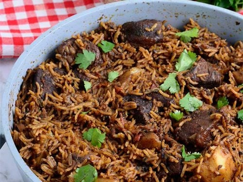

Pilau

Description
Pilau is a flavorful rice dish cooked with aromatic spices like cumin and cardamom, popular in East Africa and the Middle East for its vibrant colors and rich flavors.
Ingredients
- Long-grain rice
- Aromatic spices such as cumin, cardamom, and cloves
- Vegetables
- Meat or seafood
- Oil or butter
- Broth or water
Steps
- Mix flour, sugar, cardamom, and salt.
- Add coconut milk and melted butter/oil; knead into dough.
- Fry in hot oil until golden (2-3 mins per side).
- Drain and serve warm.